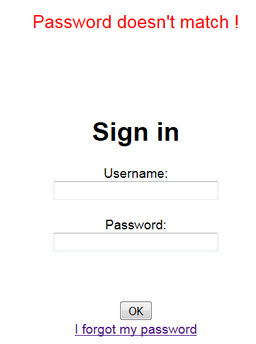
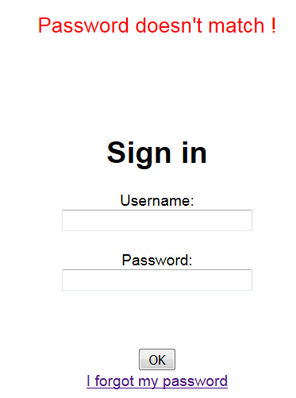
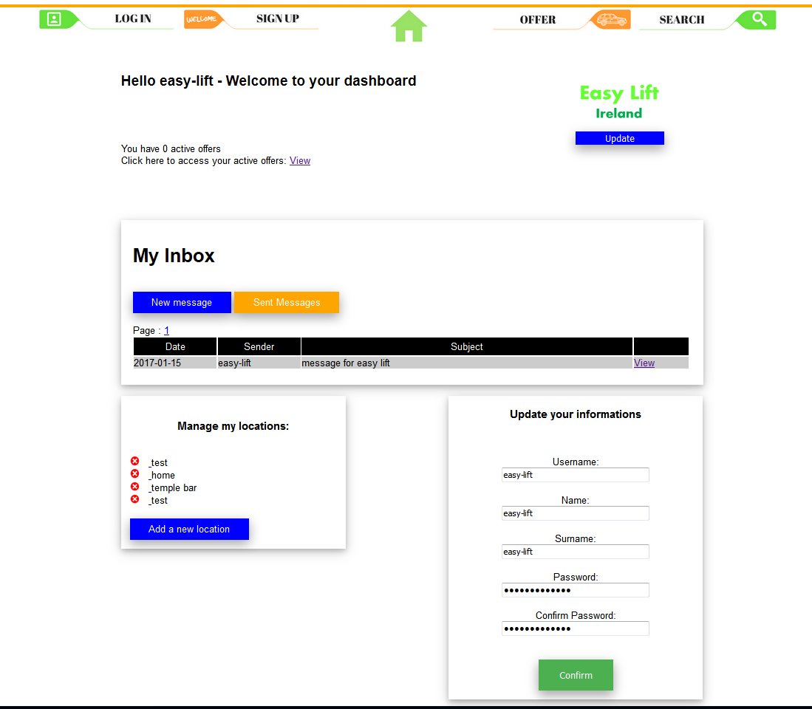

Première étape, l'inscription
Pour enregistrer les infos de nos membres, nous avons besoin d'un système de compte. J'ai réalisé un système de vérification de l'email par l'envoi d'un lien, si l'utilisateur n'a pas ce lien il ne pourra pas valider son compte.

Une page de connexion et une fonction oublie de mot de passe
On verifie que le pseudo et l'email correspondent avec un utilisateur enregistré, sinon on affiche un message d'erreur.
 

Une Zone membre interactive
Depuis cette page, l'utilisateur peut modifier ces infos, acceder à sa messagerie, uploader une photo de profil ou encore enregistrer et supprimer des locations.

Une messagerie
Afin que les utilisateurs puissent communiquer entre eux sans divulguer leur adresses mails ils peuvent utiliser la messagerie interne du site. Le pseudo (username) est renseigné automatiquement s'il passe par le bouton répondre depuis une annonce mais peut aussi être entré manuellement PHP verifie que le pseudo existe, si oui il enregistre le message dans la BDD et notifie l'utilisateur qui reçoit le message avec un email automatique.